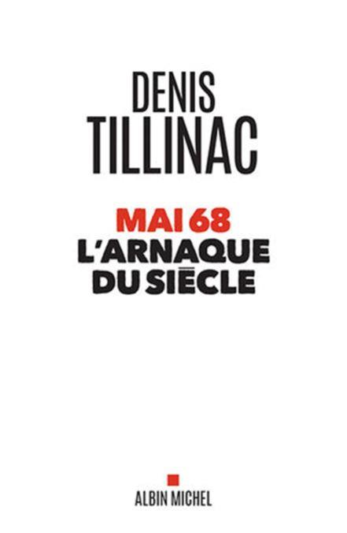

2018 est un double anniversaire. Tout d’abord le centenaire de la fin de ce que les historiens d’aujourd’hui appellent La Grande Guerre et moins solennel, 2018 est aussi le cinquantenaire des « événements de 1968 ». Lors du numéro précédent, avec « Au Revoir là-haut » de Pierre Lemaître nous avons, à notre façon, commémoré la Grande Guerre, aujourd’hui, toujours à notre façon, nous commémorons les « événements » de Mai 68.
Denis Tillinac a écrit une trentaine d’ouvrages dont plusieurs furent primés. il vient de faire paraître chez Albin Michel son dernier livre, intitulé « Mai 68 l’arnaque du siècle ». Je l’ai entendu une fois, invité sur les ondes de Radio Courtoisie, il a une voix caverneuse éraillée par le tabac brun qui étaie des remarques pertinentes et intelligentes. Denis Tillinac anime également une chronique d’actualité qui fleure le terroir corrézien dans la revue Valeurs Actuelles. Dans son œuvre il se livre à une analyse des événements de mai 68 à travers un regard personnel, une aventure individuelle, un abord particulier et intimiste des événements de cette année si particulière. Cette analyse qui ne se pare pas de prétentions « sociologiques » sonne juste et nous replace dans le contexte de l’époque, dans cet état d’esprit si singulier que fut Mai 68.
L’ouvrage commence par une phrase toute simple qui situe son auteur et pose le décor pour le lecteur :
« J’avais vingt ans en Mai 68 ». P 11
Avoir vingt ans en mai 68 ne fut pas une petite affaire. Toutes les personnes situées dans la tranche d’âge des 15 – 35 ans, voire au-delà, ont été emportées par le vent « révolutionnaire » qui soufflait alors. Il était quasiment impossible de résister à cet esprit collectif de révolte et de changement, à cette atmosphère de contestation qui imprégnait l’air ambiant.
Apparemment l’auteur ne céda pas à cette tentation, il était armé pour cela : la doctrine et l’admiration gaulliste lui étaient chevillées au corps :
« Je suis pour De Gaulle contre le reste du monde, gaullistes officiels y compris. Sauf Malraux, bien sur ». P 42
Hélas, comme il est fréquent chez les gaullistes inconditionnels qui ont ingurgité la doctrine avec leurs premiers demi-pression-gauloises sans filtre, beaucoup d’entre eux ne se rendent pas compte que, prise trop jeune, cette doctrine conduit à la cécité historique et au déni des faits.
Un gaulliste converti sur le tard ou à la maturité ne niera pas systématiquement les apories de l’histoire gaullienne et acceptera de réfléchir sur ces failles.
Pas plus qu’un « digital-native » ne peut imaginer un téléphone à cadran, un gaulliste-natif ne verra jamais les failles du gaullisme.
Lorsque la doctrine a poussé avec l’acné juvénile, elle laisse toujours des petites cicatrices, c’est ainsi qu’on retrouve quelques commentaires de Denis Tillinac assurément tranchés, non en ce qui concerne Mai 68, mais Vichy, qui bien entendu reste le signifiant absolu du mal français. Parlant des enseignants qui viennent assister aux réunions d’étudiants, l’auteur écrit, p. 109 :
« La lâcheté de leur soudaine bienveillance rappelle les vestes tournées et retournées des « élites » quand l’Histoire sort de ses gonds. 1814. 1815. 1940. 1944. Mai 68. Ou comment on se pétainise en se gauchissant. La Sorbonne n’est pas Vichy, mais on retrouve la même lâcheté, sous alibi d’un supposé sens de l’Histoire. »
Fort heureusement ce rappel au mal absolu fait de trahison et de lâcheté, (sic !) n’empêche pas le lecteur de continuer la lecture, fort plaisante, de l’ouvrage. Si l’étincelle révolutionnaire de 68 ne met pas le feu aux poudres dans l’esprit de Denis Tillinac, elle l’aide par contre à saisir la psychologie de ses camarades de fac et l’impact de l’événement qui les façonne :
« Comme si chacun essayait les costumes d’un nouveau personnage dans un salon d’habillage » P 30
« Mais cette escrime ne sert à rien, mes camarades sont trop emmurés dans leurs fantasmes éradicateurs pour s’intéresser à une pensée non marxisante. Un flic intérieur les surveille ». P 38
Pour les « révolutionnaires » soixante-huitards, les flics étaient plutôt des ennemis, la chose qui les surveillait de l’intérieur était un ami : un commissaire du peuple, un surmoioïste en somme, pour rester dans une pensée freudienne.
Car l’auteur n’ignore pas cette école de pensée, mettons même qu’il use de métaphore freudienne à bon escient, avec justesse et précision :
« Ils veulent tout et tout de suite : bébé braille si le biberon se fait attendre. Ils braillent leur refus de distinguer le principe du plaisir et le principe de réalité – et ce refus est le fin mot de leur contestation. » P 86
Ou, quelques pages plus loin, analysant le slogan majeur de Mai 68 :
« Jouir sans entraves » sera le slogan générique de Mai 68. Or « jouir sans entraves » n’est pas un idéal. Nul besoin d’avoir lu Sade ou Freud pour comprendre que la formule s’échoue dans une impasse. La sexualité n’est pas une gymnastique mentale comme le yoga. » P 101
L’auteur n’a pas oublié que la « révolution » soixante-huitarde commença bel et bien par une revendication de potaches qui demandaient de pouvoir aller librement dans le dortoir des filles :
« L’interdit pimente les délices quand on se glisse sous une couette à la barbe des autorités, parentales ou publiques. Qui a jamais demandé à son papa ou sa maman l’autorisation de sauter une fille ? Ils veulent braver un interdit, mais avec un coup de tampon qui légaliserait la bravade. » P 76
L’immense avantage de l’écriture vivante de Tillinac, par rapport à d’autres « mémoires » soixante-huitardes c’est qu’elle réussit effectivement à nous faire revivre l’énorme bêtise, la grande connerie des illusions auxquelles tout le monde croyait fermement, la folie de la pensée : il n’y avait plus de pensée logique, plus de bon sens. Ce dernier était d’aileurs banni : le bon sens fleurait une odeur de petit bourgeois réactionnaire :
« Il juge la situation « objectivement prérévolutionnaire » et préconise la création de « comités de base ». Le prolétariat est disposé à prendre les armes, dit-il. » P 33
Cinquante ans après on a du mal à s’imaginer, à se replonger dans cette immense folie, dans cette aberration de la pensée que fut Mai 68 :
« Solidarité, camarades, le fascisme ne passera pas. » Comment passerait-il ? Le fascisme n’existe pas en France, ce type prend ceux qui l’écoutent pour des cons. » P 60
Pareils dialogues ne peuvent pas avoir été tenus se dit-on aujourd’hui. La folie ambiante n’était pas schizophrène à ce point... Ô que si ! Pour ceux qui ont vécu de près ces événements soit en acteur, soit en spectateur –ce qui fut mon cas, j’avais quatorze ans et de mai 68 j’ai eu « l’après-coup » que j’ai reçu de plein fouet- les mots avaient perdu tout sens et toute raison, ils étaient devenus évocation poétique et ils n’étaient plus que ça : « sous les pavés la plage » « l’imagination au pouvoir ».
On ne pouvait d’ailleurs pas être spectateur de Mai 68, on était systématiquement happé par l’air ambiant, la neutralité était impossible, toute pensée était ou devait être « révolutionnaire ». Le matérialisme historique faisait partie intégrale de l’air que nous respirions, il rentrait dans la composition atomique de cet air. Rares furent ceux qui, comme l’auteur, n’ont pas été happés par les réponses automatiques de la dialectique marxiste et ont conservé leurs questions sans réponses :
« Les poètes dont je me repais ébauchent en mon for des châteaux en Espagne, sans m’en indiquer le chemin ni m’en donner les clefs ». P 13
Tillinac a perçu Mai 68 dans sa globalité, la dimension religieuse du phénomène ne lui a pas échappé non plus :
« Invocations quasiment piétiste du « prolétariat », ce Christ collectif expiant sur la croix les péchés des classes dominantes depuis le début de l’Histoire. Il aura sa revanche, c’est écrit dans la Bible rouge, et l’homme sera sauvé, il n’y aura plus de laissés-pour-compte. Plus de perdants à la grande roue de la fortune. Plus de bossus, plus de cocus. » P 66
Ce livre d’un peu plus de 150 pages laisse quand même un regret ; on aurait aimé que l’auteur s’étende un peu plus sur son Mai 68 à lui :
« À chacun son Mai 68 : [...] Le mien fut une fugue sans préméditation sur un Solex. En apparence elle a pris fin au mois de juin 1968 ; en réalité, je funambulise toujours sur la même ligne de fuite. D’ailleurs, j’écris ces pages dans ce même village, avec le même sentiment de ne pas être branché sur la modernité. La rupture de courant venait de trop loin, c’était irréparable ». P 143
Et cette fugue ne fut pas mineure : parti de Bordeaux l’auteur rallie Toulon pour rejoindre sa bien aimée. Puis il remonte sur Saint-Étienne par la mythique RN 7, avant de rejoindre son village natal. On apprend au détour que le Solex, dont il ne dit pas grand-chose, n’a pas supporté les monts du Forez et que ces derniers sont pour quelque chose dans la décomposition du deux roues !
L’auteur croise sur son chemin des dizaines de personnes qui ne sont absolument pas concernées par ce qui se passe à Paris, sur ce que « veulent » les étudiants etc.
Il y avait là de quoi faire cinquante ou cent pages de plaisir supplémentaire, de témoignages et d’aventures ! ce que l’auteur fera peut-être une autre fois...
« Les gendarmes me refilent gentiment du mélange à 5 %, mon Solex n’est pas gourmand. Deux fois déjà j’ai demandé du carburant dans des gendarmeries. » P 119
Son ouvrage n’étant pas un traité de sociologie, Denis Tillinac parle peu de l’après 68, des années qui suivirent et qui marquèrent la société. L’élection de François Mitterrand est l’aboutissement de Mai 68. Toutes les idéologies actuelles ont fait leurs chemins depuis ce terreau fertile, pour aboutir à un Janus idéologique : une grande libération de l’individu, un affranchissement -qui le nierait ?- en même temps qu’un asservissement à cette idéologie libertaire et liberticide. L’auteur toutefois en place deux mots à propos des acteurs principaux de 68 et de l’impact du mouvement sur les décideurs d’aujourd’hui :
« Politiciens, éditorialistes, communicants, gens de l’industrie, de la finance ou de la « culture », les quadras et les trentenaires sont tous les héritiers de Mai 68, tous. Leur « modernité » est celle de leurs père et mère. Ils ont biberonné la même idéologie ». P 143
Bien évidemment, les meneurs et les gosses de riches qui animèrent le mouvement se sont pour la plupart tirés d’affaire, pas les autres, les cocus ordinaires des « révolutions » et du militantisme qui deviendront des « consommateurs » éclairés ou illuminés :
« Les têtes d’affiches de Mai 68 sauront mener la barque de leur arrivisme : fric, honneur, notoriété. Les naïfs, les sincères, les secondes classes seront les cocus de la farce. Ils iront consommer à Katmandou ou à Woodstock le deuil de leurs illusions. Quelques moines-soldat du maoïsme se frotteront au prolétariat en allant trimer dans une usine. Pas longtemps. On est prolo ou on ne l’est pas. » P 104
Hélas, ce ne sont pas les deuxièmes classes de Mai qui ont pris le pouvoir, mais bien les officiers et les sous-off :
« Lorsque les soixante-huitards ont accaparé les postes de commande, le bonheur d’y vivre a perdu sa simplicité, son innocence et sa gouaille bon enfant. » P.146
Le constat est navrant mais réaliste et on ne peut s’empêcher d’admirer la beauté et la tournure d’une des dernières phrases de l’ouvrage qui sonne comme le tranchant d’une guillotine affutée s’abattant sur le cou de la joie de vivre :
« Les bobos sont plus high-tech, plus écolos et plus regardants sur les crimes politiques que leurs aînés. De la cause prolétarienne ils sont passés aux droits de l’homme, de la « contre-culture » à l’ « art contemporain » et des comités de base aux « think tanks » les plus élitistes. Ils ont des envies, des besoins, des fantasmes, des allergies ; ils n’ont pas accès à ces régions où les désirs se transmuent en raison d’être. » p 144
Se lit comme on boit une bonne bière en Mai : en deux gorgées !
Partager cette page